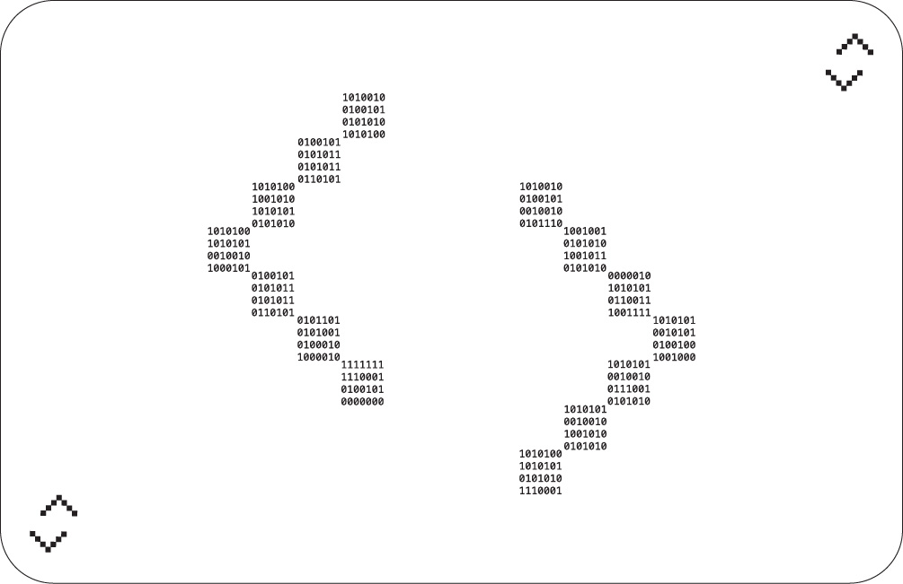
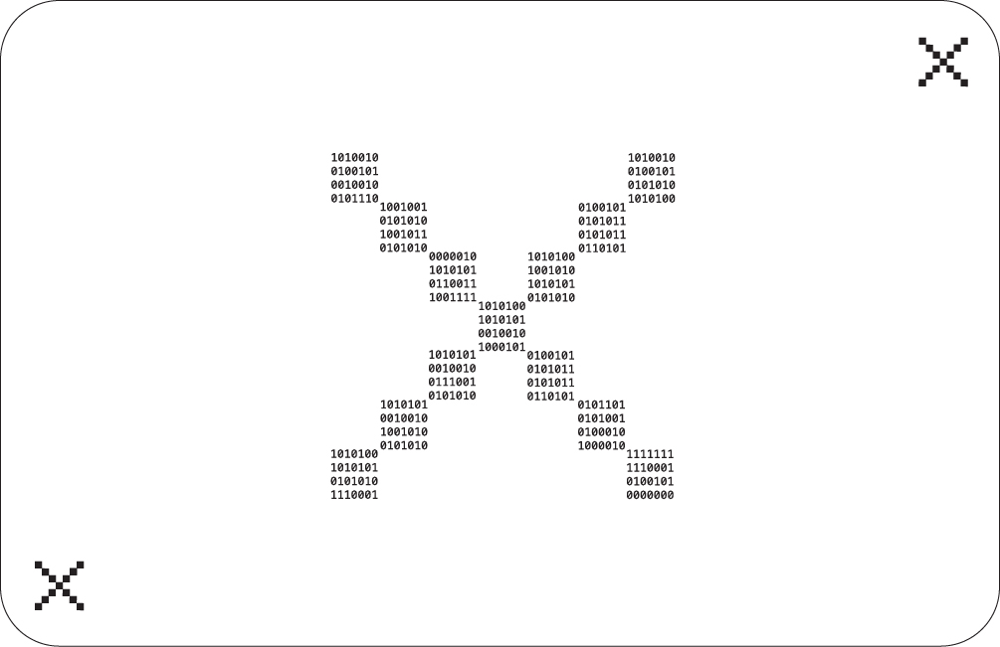
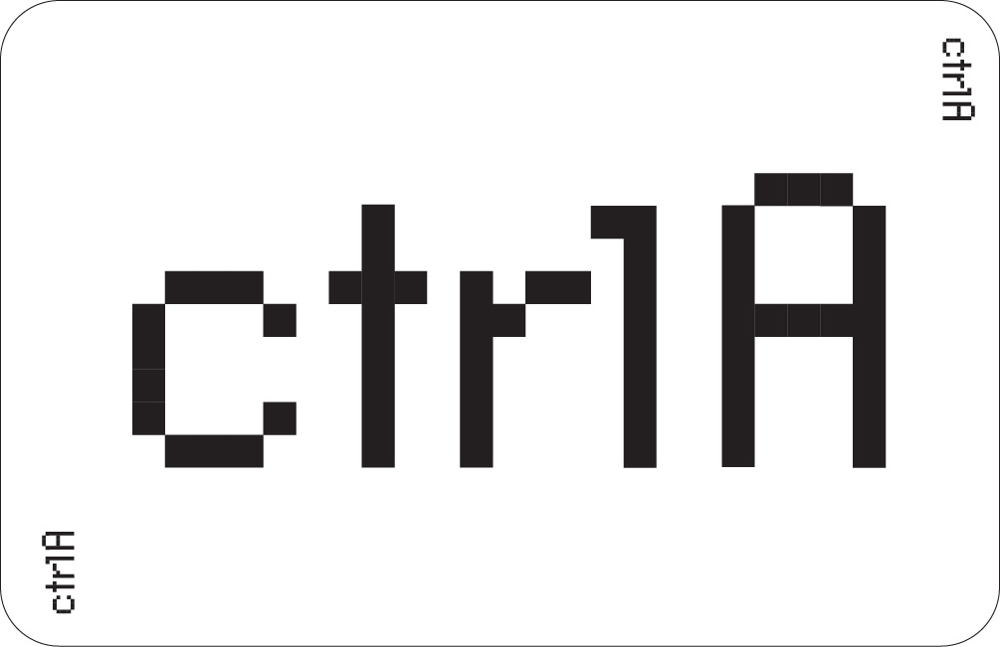
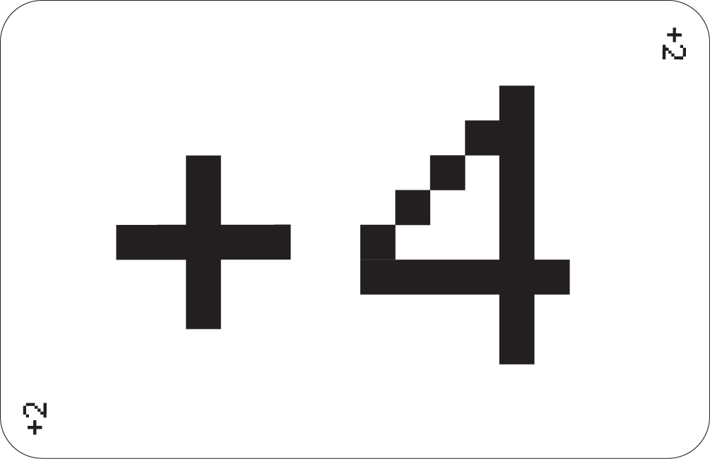

Pour les geeks, pour les écoles ou tout simplement pour ceux qui aime faire compliqué quand on peut faire simple, 0001 est la version binaire du UNO. On remplace les 10 chiffres par leur traduction en 0 et en 1 et on lance la partie.
Ce jeu du Uno peut tout aussi bien satisfaire un but pédagogique que divertissant.
108 cartes allant de 0000 à 1001 réparties en 4 motifs différents. 8 cartes +2 (2 de chaque motif) 8 cartes Inversion (2 de chaque motif) 8 cartes Passer (2 de chaque motif) 4 cartes CtrlA 4 cartes +4
Être le premier à se débarrasser de toutes ses cartes à chaque manche et marquer des points pour toutes les cartes que les adversaires ont encore en main ! Les points se cumulent d'une manche à l'autre et le premier joueur qui obtient 500 points gagne la partie.
1. Chaque joueur pioche une carte. Celui qui obtient le chiffre le plus élevé sera le
donneur (toute carte avec un symbole compte pour zéro).
2. Le donneur bat les cartes et distribue 7 cartes à chaque joueur.
3. Le reste des cartes est placé face cachée pour former une PIOCHE.
4. La carte du dessus de la PIOCHE est retournée pour constituer le TALON.
REMARQUE : si une carte action (symboles) est retournée en début de TALON,
voir le chapitre FONCTIONS DES CARTES ACTION.
Le joueur placé à gauche du donneur commence.
Le joueur doit recouvrir la carte visible du TALON par une carte du même motif,
ou portant le même numéro ou le même symbole que celle-ci (les symboles
représentent des Cartes Action. Voir le chapitre FONCTIONS DES CARTES ACTION).
EXEMPLE : si la carte du TALON est un 0111 motif de QR code, le joueur peut poser une carte
du motif QR code OU un 0111 de n'importe quelle couleur. Il peut également jouer une carte
Joker (voir le chapitre FONCTIONS DES CARTES ACTION).
Si le joueur ne possède pas de carte lui permettant de jouer, il PIOCHE une carte.
Si cette carte peut être jouée, il a le droit de la poser. Sinon, il passe son tour et
conserve cette carte supplémentaire.
Les joueurs peuvent choisir de NE PAS jouer une carte. Ils doivent alors PIOCHER
une carte. Si cette carte peut être jouée, ils peuvent la poser, mais ils ne peuvent
pas jouer une carte qu'ils avaient déjà en main avant de piocher.
Carte +2 – Lorsque cette carte est jouée, le joueur suivant
doit piocher 2 cartes et passer son tour. Cette carte ne peut
être jouée que sur une carte de la même couleur ou sur une
autre carte +2. Si cette carte est retournée en début de jeu,
la même règle s'applique.

Carte Inversion – Lorsque cette carte est jouée, le sens du
jeu change (si le jeu évoluait vers la gauche, il doit désormais
évoluer vers la droite et vice versa). Cette carte ne peut être
jouée que sur une carte de la même couleur ou sur une autre
carte Inversion. Si cette carte est retournée en début de jeu,
le donneur joue en premier, puis le jeu continue vers la droite
au lieu de la gauche.

Carte Passer – Lorsque cette carte est jouée, le joueur
suivant doit passer son tour. Cette carte ne peut être jouée
que sur une carte de même couleur ou sur une autre carte
Passer. Si cette carte est retournée en début de jeu, le joueur
à la gauche du donneur passe son tour et c’est au joueur
suivant de commencer.

Carte CtrlA – Celui qui joue cette carte peut choisir de
changer la couleur (il annonce son choix en posant la carte)
ou de continuer dans la couleur demandée. Cette carte peut
être jouée après n’importe quelle autre carte, même si le
joueur a une autre carte qu’il peut jouer. Si c’est la première
carte de la pioche, le joueur placé à gauche du donneur
choisit la couleur de départ et joue la première carte.

Carte +4 – Celui qui joue cette carte peut choisir
de changer la couleur ET oblige le joueur suivant à piocher 4
cartes et à passer son tour. Mais attention ! Un joueur ne peut
jouer cette carte que s'il ne possède AUCUNE carte de la
COULEUR DEMANDÉE (mais il peut l'utiliser s'il possède une
carte Action ou une carte de chiffre identique). Si c’est la
première carte du jeu, le donneur doit la remettre dans la
pioche et en tirer une autre.
REMARQUE : si un joueur pense qu'un adversaire l'a bluffé
avec une carte Super Joker (c'est-à-dire que l'adversaire
pouvait jouer une carte de la couleur demandée), il peut lui
lancer un défi. Le joueur mis au défi doit alors montrer son
jeu à celui qui le défie. Si le joueur mis au défi a tort, il doit
tirer 4 cartes à la place du joueur initialement pénalisé.
Cependant, si le joueur mis au défi est innocent, le joueur
doit tirer 4 cartes PLUS 2 autres cartes (6 en tout) !
Lorsqu’un joueur pose son avant-dernière carte, il doit immédiatement annoncer
à voix haute « UNO » (qui signifie « un ») pour indiquer à ses adversaires qu’il n’a
plus qu’une seule carte en main. S’il oublie et que l’un de ses adversaires le lui
fait remarquer avant que le joueur suivant n’ait joué, il doit piocher deux cartes
de pénalité.
La manche est finie lorsqu’un joueur a posé sa dernière carte. Les points sont
comptés (voir COMPTAGE DES POINTS) et les joueurs engagent la manche
suivante.
Si la dernière carte jouée est une carte +2 ou un Super Joker, le joueur suivant
doit piocher 2 ou 4 cartes. Ces cartes seront prises en compte dans le calcul des
points.
Si la PIOCHE est épuisée avant la fin d’une manche, le TALON est mélangé et le
jeu continue.
Le premier joueur à s'être débarrassé de toutes ses cartes se voit attribuer le
nombre de points correspondant aux cartes que les autres joueurs ont encore en
main. Les points des cartes sont attribués comme suit:
0000 à 1001 : ......................... valeur du chiffre
+2 : ..................................................... 20 points
Inversion : .......................................... 20 points
Passer : .............................................. 20 points
CtrlA : ................................................. 50 points
+4 : ...................................................... 50 points
Si à l'issue de la manche aucun joueur n'a atteint 500 points, les cartes sont
battues et les joueurs commencent une nouvelle manche.
Le VAINQUEUR est le premier joueur à atteindre 500 points.
On peut également tenir les scores en inscrivant le nombre de points que chaque joueur a en main à la fin de chaque manche. Lorsqu'un joueur atteint ou dépasse 500 points, celui qui a le moins de points est déclaré vainqueur.